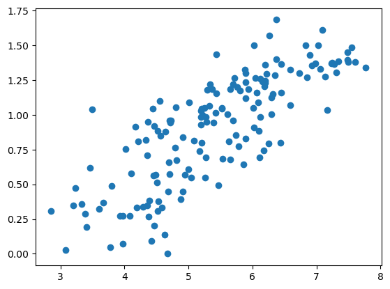
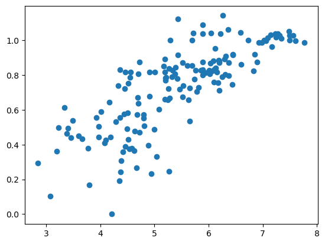
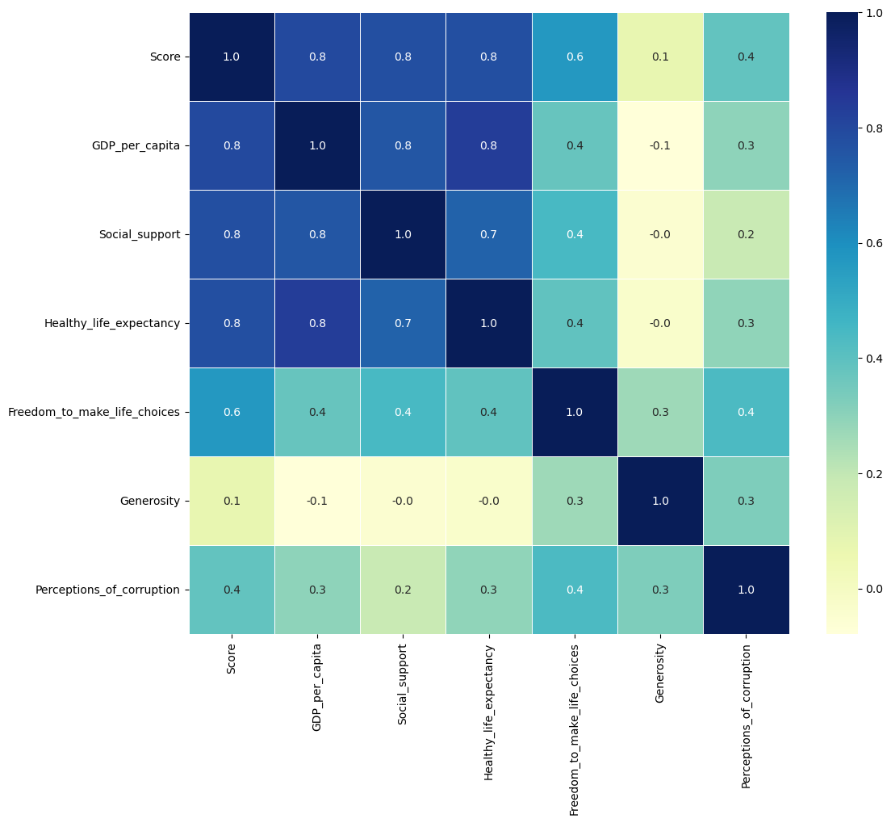
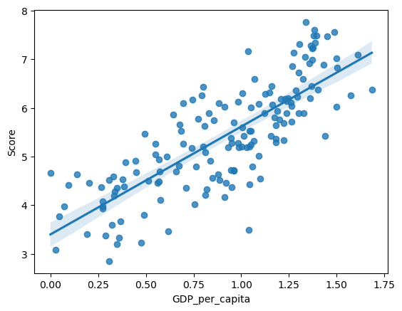
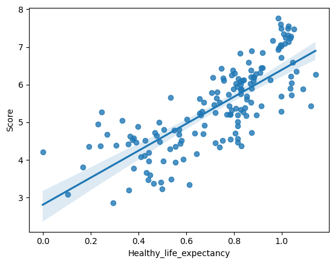
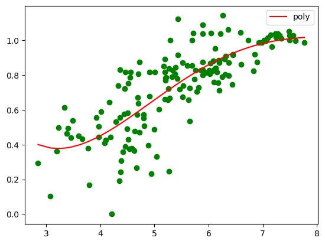

import pandas as pd
import matplotlib.pyplot as plt
import seaborn as sns
from statsmodels.formula import api as smfRegressions 2
In this session, we will explore the World Happiness Report.
We will analyse those data to find relationships between the happiness score and economy, family, health, freedom, trust, perception of corruption, generosity…
The dataset contains the following variables:
- Country : Country name
- Overall rank : Country ranking based on happiness score
- Score : Individual personal happiness rating from 0 to 10.
- GDP per capita : GDP per capita of each country in terms of purchasing power parity (PPP) (in USD)
- Social support : Individual rating that determines whether, when you have problems, your family or friends would help you. Binary responses (0 or 1).
- Healthy life expectancy : Healthy life expectancy at birth is based on data from the World Health Organization (WHO)
- Freedom to make life choices : Individual rating that determines whether you are atisfied or dissatisfied with your freedom to choose hat you do with your life. Binary responses (0 or 1).
- Generosity : Generosity is the residual from the regression of the national mean of responses to the question “Have you donated money to a charity in the last month?” on GDP per capita.
- Perceptions of corruption : Average of binary responses to two GWP questions: corruption in government and corruption in business.
I) Data exploration
Open the csv “happiness_index_2019”
df=pd.read_csv('happiness_index_2019.csv')
df.columns = df.columns.str.replace(' ', '_')Explore the dataset by using head function.
df.head(10)| Overall_rank | Country_or_region | Score | GDP_per_capita | Social_support | Healthy_life_expectancy | Freedom_to_make_life_choices | Generosity | Perceptions_of_corruption | |
|---|---|---|---|---|---|---|---|---|---|
| 0 | 1 | Finland | 7.769 | 1.340 | 1.587 | 0.986 | 0.596 | 0.153 | 0.393 |
| 1 | 2 | Denmark | 7.600 | 1.383 | 1.573 | 0.996 | 0.592 | 0.252 | 0.410 |
| 2 | 3 | Norway | 7.554 | 1.488 | 1.582 | 1.028 | 0.603 | 0.271 | 0.341 |
| 3 | 4 | Iceland | 7.494 | 1.380 | 1.624 | 1.026 | 0.591 | 0.354 | 0.118 |
| 4 | 5 | Netherlands | 7.488 | 1.396 | 1.522 | 0.999 | 0.557 | 0.322 | 0.298 |
| 5 | 6 | Switzerland | 7.480 | 1.452 | 1.526 | 1.052 | 0.572 | 0.263 | 0.343 |
| 6 | 7 | Sweden | 7.343 | 1.387 | 1.487 | 1.009 | 0.574 | 0.267 | 0.373 |
| 7 | 8 | New Zealand | 7.307 | 1.303 | 1.557 | 1.026 | 0.585 | 0.330 | 0.380 |
| 8 | 9 | Canada | 7.278 | 1.365 | 1.505 | 1.039 | 0.584 | 0.285 | 0.308 |
| 9 | 10 | Austria | 7.246 | 1.376 | 1.475 | 1.016 | 0.532 | 0.244 | 0.226 |
Compute descriptive statistics using a Pandas function
df.describe()| Overall_rank | Score | GDP_per_capita | Social_support | Healthy_life_expectancy | Freedom_to_make_life_choices | Generosity | Perceptions_of_corruption | |
|---|---|---|---|---|---|---|---|---|
| count | 156.000000 | 156.000000 | 156.000000 | 156.000000 | 156.000000 | 156.000000 | 156.000000 | 156.000000 |
| mean | 78.500000 | 5.407096 | 0.905147 | 1.208814 | 0.725244 | 0.392571 | 0.184846 | 0.110603 |
| std | 45.177428 | 1.113120 | 0.398389 | 0.299191 | 0.242124 | 0.143289 | 0.095254 | 0.094538 |
| min | 1.000000 | 2.853000 | 0.000000 | 0.000000 | 0.000000 | 0.000000 | 0.000000 | 0.000000 |
| 25% | 39.750000 | 4.544500 | 0.602750 | 1.055750 | 0.547750 | 0.308000 | 0.108750 | 0.047000 |
| 50% | 78.500000 | 5.379500 | 0.960000 | 1.271500 | 0.789000 | 0.417000 | 0.177500 | 0.085500 |
| 75% | 117.250000 | 6.184500 | 1.232500 | 1.452500 | 0.881750 | 0.507250 | 0.248250 | 0.141250 |
| max | 156.000000 | 7.769000 | 1.684000 | 1.624000 | 1.141000 | 0.631000 | 0.566000 | 0.453000 |
Plot variables that may have a positive correlation using matplotlib
plt.plot(df['Score'],df['GDP_per_capita'],'o')
plt.plot(df['Score'],df['Healthy_life_expectancy'],'o')
Plot the correlation matrix of the main variables using heatmap function of Seaborn package. It should already be installed on your Nuvolos instance (use escpython kernel).
#Correlation Map
list1=["Score","GDP_per_capita","Social_support","Healthy_life_expectancy","Freedom_to_make_life_choices","Generosity","Perceptions_of_corruption"]
fig, ax = plt.subplots(figsize=(12,10))
sns.heatmap(df[list1].corr(), annot=True, cmap="YlGnBu", linewidths=.5, fmt= '.1f',ax=ax)
plt.show()
From the above charts, we can obtain the following conclusions:
The Happiness Score is highly related with the GDP per Capita, Social Support and Healthy Life Expectancy.
The Happines Score is not related at all with the Generosity Variable.So, as a first conclusion, we could say that the Happiest Countries will be the ones with higher GDP per capita, Social Support and Life Expectancy.
II) Linear regression
A) Simple linear regression
Perform various linear regressions to predict the Happiness score using one of the variables available in the dataset.
df.columnsIndex(['Overall_rank', 'Country_or_region', 'Score', 'GDP_per_capita',
'Social_support', 'Healthy_life_expectancy',
'Freedom_to_make_life_choices', 'Generosity',
'Perceptions_of_corruption'],
dtype='object')model_1 = smf.ols("Score ~ GDP_per_capita", df)
res_1 = model_1.fit()
res_1.summary()| Dep. Variable: | Score | R-squared: | 0.630 |
|---|---|---|---|
| Model: | OLS | Adj. R-squared: | 0.628 |
| Method: | Least Squares | F-statistic: | 262.5 |
| Date: | Wed, 15 Feb 2023 | Prob (F-statistic): | 4.32e-35 |
| Time: | 11:00:56 | Log-Likelihood: | -159.97 |
| No. Observations: | 156 | AIC: | 323.9 |
| Df Residuals: | 154 | BIC: | 330.0 |
| Df Model: | 1 | ||
| Covariance Type: | nonrobust |
| coef | std err | t | P>|t| | [0.025 | 0.975] | |
|---|---|---|---|---|---|---|
| Intercept | 3.3993 | 0.135 | 25.120 | 0.000 | 3.132 | 3.667 |
| GDP_per_capita | 2.2181 | 0.137 | 16.202 | 0.000 | 1.948 | 2.489 |
| Omnibus: | 1.139 | Durbin-Watson: | 1.378 |
|---|---|---|---|
| Prob(Omnibus): | 0.566 | Jarque-Bera (JB): | 1.244 |
| Skew: | -0.177 | Prob(JB): | 0.537 |
| Kurtosis: | 2.742 | Cond. No. | 4.77 |
Notes:
[1] Standard Errors assume that the covariance matrix of the errors is correctly specified.
model_1 = smf.ols("Score ~ GDP_per_capita + Healthy_life_expectancy + Freedom_to_make_life_choices", df)
res_1 = model_1.fit()res_1.summary()| Dep. Variable: | Score | R-squared: | 0.742 |
|---|---|---|---|
| Model: | OLS | Adj. R-squared: | 0.737 |
| Method: | Least Squares | F-statistic: | 146.1 |
| Date: | Wed, 15 Feb 2023 | Prob (F-statistic): | 1.42e-44 |
| Time: | 11:00:13 | Log-Likelihood: | -131.75 |
| No. Observations: | 156 | AIC: | 271.5 |
| Df Residuals: | 152 | BIC: | 283.7 |
| Df Model: | 3 | ||
| Covariance Type: | nonrobust |
| coef | std err | t | P>|t| | [0.025 | 0.975] | |
|---|---|---|---|---|---|---|
| Intercept | 2.4201 | 0.167 | 14.519 | 0.000 | 2.091 | 2.749 |
| GDP_per_capita | 1.1781 | 0.210 | 5.599 | 0.000 | 0.762 | 1.594 |
| Healthy_life_expectancy | 1.4578 | 0.348 | 4.189 | 0.000 | 0.770 | 2.145 |
| Freedom_to_make_life_choices | 2.1993 | 0.349 | 6.298 | 0.000 | 1.509 | 2.889 |
| Omnibus: | 11.927 | Durbin-Watson: | 1.497 |
|---|---|---|---|
| Prob(Omnibus): | 0.003 | Jarque-Bera (JB): | 12.394 |
| Skew: | -0.665 | Prob(JB): | 0.00204 |
| Kurtosis: | 3.369 | Cond. No. | 14.2 |
Notes:
[1] Standard Errors assume that the covariance matrix of the errors is correctly specified.
sns.regplot(x='GDP_per_capita', y='Score', data=df)<AxesSubplot: xlabel='GDP_per_capita', ylabel='Score'>
model_2 = smf.ols("Score ~ Healthy_life_expectancy", df)
res_2 = model_2.fit()
res_2.summary()| Dep. Variable: | Score | R-squared: | 0.608 |
|---|---|---|---|
| Model: | OLS | Adj. R-squared: | 0.606 |
| Method: | Least Squares | F-statistic: | 239.1 |
| Date: | Tue, 14 Feb 2023 | Prob (F-statistic): | 3.79e-33 |
| Time: | 20:44:17 | Log-Likelihood: | -164.48 |
| No. Observations: | 156 | AIC: | 333.0 |
| Df Residuals: | 154 | BIC: | 339.1 |
| Df Model: | 1 | ||
| Covariance Type: | nonrobust |
| coef | std err | t | P>|t| | [0.025 | 0.975] | |
|---|---|---|---|---|---|---|
| Intercept | 2.8068 | 0.177 | 15.837 | 0.000 | 2.457 | 3.157 |
| Healthy_life_expectancy | 3.5854 | 0.232 | 15.462 | 0.000 | 3.127 | 4.043 |
| Omnibus: | 6.324 | Durbin-Watson: | 1.140 |
|---|---|---|---|
| Prob(Omnibus): | 0.042 | Jarque-Bera (JB): | 3.543 |
| Skew: | -0.148 | Prob(JB): | 0.170 |
| Kurtosis: | 2.324 | Cond. No. | 6.41 |
Notes:
[1] Standard Errors assume that the covariance matrix of the errors is correctly specified.
sns.regplot(x='Healthy_life_expectancy', y='Score', data=df)<AxesSubplot: xlabel='Healthy_life_expectancy', ylabel='Score'>
B) Multiple linear regression
Multiple linear regression
model_3 = smf.ols("Score ~ Healthy_life_expectancy + Freedom_to_make_life_choices + GDP_per_capita +Social_support", df)
res_3= model_3.fit()
res_3.summary()| Dep. Variable: | Score | R-squared: | 0.771 |
|---|---|---|---|
| Model: | OLS | Adj. R-squared: | 0.765 |
| Method: | Least Squares | F-statistic: | 127.0 |
| Date: | Tue, 14 Feb 2023 | Prob (F-statistic): | 2.82e-47 |
| Time: | 20:44:20 | Log-Likelihood: | -122.62 |
| No. Observations: | 156 | AIC: | 255.2 |
| Df Residuals: | 151 | BIC: | 270.5 |
| Df Model: | 4 | ||
| Covariance Type: | nonrobust |
| coef | std err | t | P>|t| | [0.025 | 0.975] | |
|---|---|---|---|---|---|---|
| Intercept | 1.8921 | 0.199 | 9.491 | 0.000 | 1.498 | 2.286 |
| Healthy_life_expectancy | 1.1414 | 0.337 | 3.384 | 0.001 | 0.475 | 1.808 |
| Freedom_to_make_life_choices | 1.8458 | 0.340 | 5.423 | 0.000 | 1.173 | 2.518 |
| GDP_per_capita | 0.8105 | 0.216 | 3.745 | 0.000 | 0.383 | 1.238 |
| Social_support | 1.0166 | 0.235 | 4.331 | 0.000 | 0.553 | 1.480 |
| Omnibus: | 5.077 | Durbin-Watson: | 1.641 |
|---|---|---|---|
| Prob(Omnibus): | 0.079 | Jarque-Bera (JB): | 4.685 |
| Skew: | -0.413 | Prob(JB): | 0.0961 |
| Kurtosis: | 3.198 | Cond. No. | 17.8 |
Notes:
[1] Standard Errors assume that the covariance matrix of the errors is correctly specified.
### By comparing adjusted $R^2$, find the regression which explains best happiness.Polynomial regression
from sklearn.preprocessing import PolynomialFeatures
from sklearn.linear_model import LinearRegressionx=df.Score.values.reshape(-1,1)
y=df["Healthy_life_expectancy"].values.reshape(-1,1)
plt.scatter(df["Score"],df["Healthy_life_expectancy"],color="green")
polynomial_regression=PolynomialFeatures(degree=4)
x_polynomial=polynomial_regression.fit_transform(x)
#%% fit
linear_regression2=LinearRegression()
linear_regression2.fit(x_polynomial,y)
#%%
y_head2=linear_regression2.predict(x_polynomial)
plt.plot(x,y_head2,color="red",label="poly")
plt.legend()
plt.show()